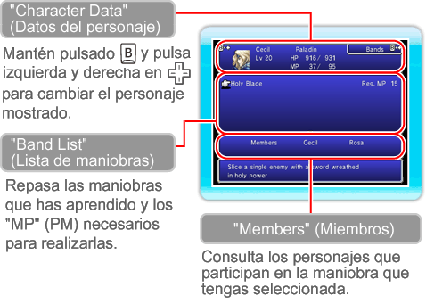

Aquí podrás repasar el efecto de las maniobras que hayas aprendido, así como los personajes necesarios para realizarlas. Selecciona una maniobra y luego otra para que intercambien sus lugares en la lista. Consulta la pág. 21 para obtener más información sobre las maniobras.

"Holy Blade"
(Hoja sagrada)
|
"MP" (PM): 15
Miembros: Cecil, Rosa
|
|
Corta a un enemigo con un filo envuelto en poder sagrado.
|
"Machine Break"
(Averiar mecanismo)
|
"MP" (PM): 7
Miembros: Cecil, Cid
|
|
Hace un daño enorme a los enemigos mecánicos
|
|
"MP" (PM): 12
Miembros: Rosa, Cid |
Asesta un golpe crítico a un enemigo
|
"Divine Heal"
(Remedio divino)
|
"MP" (PM): 28
Miembros: Ceodore, Rosa
|
Restablece los "HP" (PV) de los miembros del grupo con las bendiciones de la luna.
|
"Rocket Launcher"
(Lanzacohetes)
|
"MP" (PM): 12
Miembros: Ceodore, Cid
|
Encanta las armas con fuego para atacar al enemigo.
|